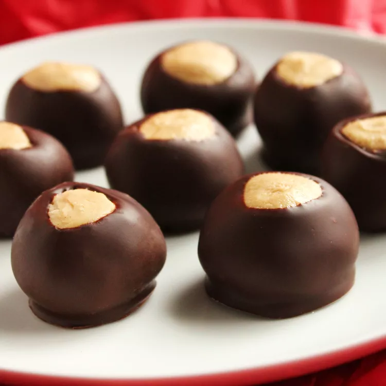

Buckeye Balls from allrecipes.com

Description
Here's what's in buckeye balls: The peanut butter balls are made with confectioners' sugar, creamy peanut butter, unsalted butter, and vanilla extract. The coating comes together quickly with just semi-sweet chocolate chips and shortening.
Ingredients
- 4 cups sifted confectioners' sugar
- 1 ½ cups creamy peanut butter
- ½ cup unsalted butter, softened
- 1 teaspoon vanilla extract
- 6 ounces semi-sweet chocolate chips
- 2 tablespoons shortening
Steps
- Line a baking sheet with waxed paper; set aside.
- Combine confectioners' sugar, peanut butter, butter, and vanilla in a large bowl; mix together with your hands to form a smooth stiff dough. Shape into balls using 2 teaspoons of dough for each ball. Place on the prepared baking sheet and refrigerate until ready to coat with chocolate.
- Combine chocolate chips and shortening in a metal bowl over a pot of simmering water. Stir occasionally until melted and smooth. Remove from the heat.
- Remove chilled peanut butter balls from the refrigerator.
- Insert a wooden toothpick into a ball, and dip into the melted chocolate until coated. Return to the baking sheet, chocolate-side down, and remove the toothpick.
- Repeat Step 5 to coat remaining balls. Refrigerate coated balls until set, about 30 minutes.